3.2. Support Vector Machines¶
Support vector machines (SVMs) are a set of supervised learning methods used for classification, regression and outliers detection.
The advantages of Support Vector Machines are:
- Effective in high dimensional spaces.
- Still effective in cases where number of dimensions is greater than the number of samples.
- Uses a subset of training points in the decision function (called support vectors), so it is also memory efficient.
- Versatile: different Kernel functions can be specified for the decision function. Common kernels are provided, but it is also possible to specify custom kernels.
The disadvantages of Support Vector Machines include:
- If the number of features is much greater than the number of samples, the method is likely to give poor performances.
- SVMs do not directly provide probability estimates, these are calculated using five-fold cross-validation, and thus performance can suffer.
3.2.1. Classification¶
SVC, NuSVC and LinearSVC are classes capable of performing multi-class classification on a dataset.
SVC and NuSVC are similar methods, but accept slightly different sets of parameters and have different mathematical formulations (see section Mathematical formulation). On the other hand, LinearSVC is another implementation of Support Vector Classification for the case of a linear kernel. Note that LinearSVC does not accept keyword ‘kernel’, as this is assumed to be linear. It also lacks some of the members of SVC and NuSVC, like support_.
As other classifiers, SVC, NuSVC and LinearSVC take as input two arrays: an array X of size [n_samples, n_features] holding the training samples, and an array Y of integer values, size [n_samples], holding the class labels for the training samples:
>>> from scikits.learn import svm
>>> X = [[0, 0], [1, 1]]
>>> Y = [0, 1]
>>> clf = svm.SVC()
>>> clf.fit(X, Y)
SVC(kernel='rbf', C=1.0, probability=False, degree=3, coef0=0.0, tol=0.001,
cache_size=100.0, shrinking=True, gamma=0.5)
After being fitted, the model can then be used to predict new values:
>>> clf.predict([[2., 2.]])
array([ 1.])
SVMs decision function depends on some subset of the training data, called the support vectors. Some properties of these support vectors can be found in members support_vectors_, support_ and n_support:
>>> # get support vectors
>>> clf.support_vectors_
array([[ 0., 0.],
[ 1., 1.]])
>>> # get indices of support vectors
>>> clf.support_
array([0, 1]...)
>>> # get number of support vectors for each class
>>> clf.n_support_
array([1, 1]...)
3.2.1.1. Multi-class classification¶
SVC and NuSVC implement the “one-against-one” approach (Knerr et al., 1990) for multi- class classification. If n_class is the number of classes, then n_class * (n_class - 1)/2 classifiers are constructed and each one trains data from two classes.
>>> X = [[0], [1], [2], [3]]
>>> Y = [0, 1, 2, 3]
>>> clf = svm.SVC()
>>> clf.fit(X, Y)
SVC(kernel='rbf', C=1.0, probability=False, degree=3, coef0=0.0, tol=0.001,
cache_size=100.0, shrinking=True, gamma=0.25)
>>> dec = clf.decision_function([[1]])
>>> dec.shape[1] # 4 classes: 4*3/2 = 6
6
On the other hand, LinearSVC implements “one-vs-the-rest” multi-class strategy, thus training n_class models. If there are only two classes, only one model is trained.
>>> lin_clf = svm.LinearSVC()
>>> lin_clf.fit(X, Y)
LinearSVC(loss='l2', C=1.0, dual=True, fit_intercept=True, penalty='l2',
multi_class=False, tol=0.0001, intercept_scaling=1)
>>> dec = lin_clf.decision_function([[1]])
>>> dec.shape[1]
4
See Mathematical formulation for a complete description of the decision function.
3.2.1.2. Unbalanced problems¶
In problems where it is desired to give more importance to certain classes or certain individual samples keywords class_weight and sample_weight can be used.
SVC (but not NuSVC) implement a keyword class_weight in the fit method. It’s a dictionary of the form {class_label : value}, where value is a floating point number > 0 that sets the parameter C of class class_label to C * value.
SVC, NuSVC, SVR, NuSVR and OneClassSVM implement also weights for individual samples in method fit through keyword sample_weight.
3.2.2. Regression¶
The method of Support Vector Classification can be extended to solve regression problems. This method is called Support Vector Regression.
The model produced by support vector classification (as described above) depends only on a subset of the training data, because the cost function for building the model does not care about training points that lie beyond the margin. Analogously, the model produced by Support Vector Regression depends only on a subset of the training data, because the cost function for building the model ignores any training data close to the model prediction.
There are two flavors of Support Vector Regression: SVR and NuSVR.
As with classification classes, the fit method will take as argument vectors X, y, only that in this case y is expected to have floating point values instead of integer values.
>>> from scikits.learn import svm
>>> X = [[0, 0], [2, 2]]
>>> y = [0.5, 2.5]
>>> clf = svm.SVR()
>>> clf.fit(X, y)
SVR(kernel='rbf', C=1.0, probability=False, degree=3, epsilon=0.1,
shrinking=True, tol=0.001, cache_size=100.0, coef0=0.0, nu=0.5,
gamma=0.5)
>>> clf.predict([[1, 1]])
array([ 1.5])
3.2.3. Density estimation, outliers detection¶
One-class SVM is used for outliers detection, that is, given a set of samples, it will detect the soft boundary of that set so as to classify new points as belonging to that set or not. The class that implements this is called OneClassSVM
In this case, as it is a type of unsupervised learning, the fit method will only take as input an array X, as there are no class labels.
3.2.4. Support Vector machines for sparse data¶
There is support for sparse data given in any matrix in a format supported by scipy.sparse. Classes have the same name, just prefixed by the sparse namespace, and take the same arguments, with the exception of training and test data, which is expected to be in a matrix format defined in scipy.sparse.
For maximum efficiency, use the CSR matrix format as defined in scipy.sparse.csr_matrix.
Implemented classes are SVC, NuSVC, SVR, NuSVR, OneClassSVM, LinearSVC.
3.2.5. Complexity¶
Support Vector Machines are powerful tools, but their compute and storage requirements increase rapidly with the number of training vectors. The core of an SVM is a quadratic programming problem (QP), separating support vectors from the rest of the training data. The QP solver used by this libsvm-based implementation scales between 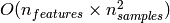 and 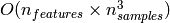 depending on how efficiently the libsvm cache is used in practice (dataset dependent). If the data is very sparse 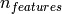 should be replaced by the average number of non-zero features in a sample vector.
Also note that for the linear case, the algorithm used in LinearSVC by the liblinear implementation is much more efficient than its libsvm-based SVC counterpart and can scale almost linearly to millions of samples and/or features.
3.2.6. Tips on Practical Use¶
- Support Vector Machine algorithms are not scale invariant, so it is highly recommended to scale your data. For example, scale each attribute on the input vector X to [0,1] or [-1,+1], or standardize it to have mean 0 and variance 1. Note that the same scaling must be applied to the test vector to obtain meaningful results. See The CookBook for some examples on scaling.
- Parameter nu in NuSVC/OneClassSVM/NuSVR approximates the fraction of training errors and support vectors.
- In SVC, if data for classification are unbalanced (e.g. many positive and few negative), set class_weight=’auto’ and/or try different penalty parameters C.
- Specify larger cache size (keyword cache) for huge problems.
- The underlying LinearSVC implementation uses a random number generator to select features when fitting the model. It is thus not uncommon, to have slightly different results for the same input data. If that happens, try with a smaller tol parameter.
- Using L1 penalization as provided by LinearSVC(loss=’l2’, penalty=’l1’, dual=False) yields a sparse solution, i.e. only a subset of feature weights is different from zero and contribute to the decision function. Increasing C yields a more complex model (more feature are selected). The C value that yields a “null” model (all weights equal to zero) can be calculated using l1_min_c.
3.2.7. Kernel functions¶
The kernel function can be any of the following:
- linear:
.
- polynomial: 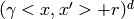. d is specified by keyword degree.
- rbf (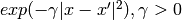). 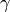 is specified by keyword gamma.
- sigmoid (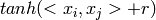).
Different kernels are specified by keyword kernel at initialization:
>>> linear_svc = svm.SVC(kernel='linear')
>>> linear_svc.kernel
'linear'
>>> rbf_svc = svm.SVC(kernel='rbf')
>>> rbf_svc.kernel
'rbf'
3.2.7.1. Custom Kernels¶
You can define your own kernels by either giving the kernel as a python function or by precomputing the Gram matrix.
Classifiers with custom kernels behave the same way as any other classifiers, except that:
- Field support_vectors_ is now empty, only indices of support vectors are stored in support_
- A reference (and not a copy) of the first argument in the fit() method is stored for future reference. If that array changes between the use of fit() and predict() you will have unexpected results.
3.2.7.1.1. Using python functions as kernels¶
You can also use your own defined kernels by passing a function to the keyword kernel in the constructor.
Your kernel must take as arguments two matrices and return a third matrix.
The following code defines a linear kernel and creates a classifier instance that will use that kernel:
>>> import numpy as np
>>> from scikits.learn import svm
>>> def my_kernel(x, y):
... return np.dot(x, y.T)
...
>>> clf = svm.SVC(kernel=my_kernel)
3.2.7.1.2. Using the Gram matrix¶
Set kernel=’precomputed’ and pass the Gram matrix instead of X in the fit method.
Examples:
3.2.8. Mathematical formulation¶
A support vector machine constructs a hyper-plane or set of hyper-planes in a high or infinite dimensional space, which can be used for classification, regression or other tasks. Intuitively, a good separation is achieved by the hyper-plane that has the largest distance to the nearest training data points of any class (so-called functional margin), since in general the larger the margin the lower the generalization error of the classifier.

3.2.8.1. SVC¶
Given training vectors 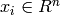, i=1,..., l, in two
classes, and a vector  such that 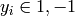, SVC solves the following primal problem:
such that 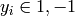, SVC solves the following primal problem:
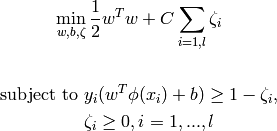
Its dual is
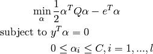
where 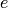 is the vector of all ones, C > 0 is the upper bound, Q is an l by l positive semidefinite matrix, 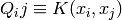 and 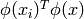 is the kernel. Here training vectors are mapped into a higher (maybe infinite) dimensional space by the function 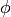
The decision function is:
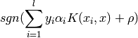
This parameters can be accessed through the members dual_coef_ which holds the product 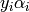, support_vectors_ which holds the support vectors, and intercept_ which holds the independent term 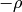 :
References:
- “Automatic Capacity Tuning of Very Large VC-dimension Classifiers” I Guyon, B Boser, V Vapnik - Advances in neural information processing 1993,
- “Support-vector networks” C. Cortes, V. Vapnik, Machine Leaming, 20, 273-297 (1995)
3.2.8.2. NuSVC¶
We introduce a new parameter 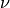 which controls the number of
support vectors and training errors. The parameter ![\nu \in (0,
1]](../_images/math/948360fd417f20a48ae449aa26ede1baef981854.png) is an upper bound on the fraction of training errors and a lower
bound of the fraction of support vectors.
is an upper bound on the fraction of training errors and a lower
bound of the fraction of support vectors.